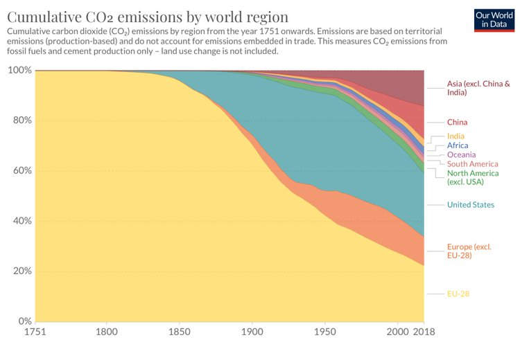
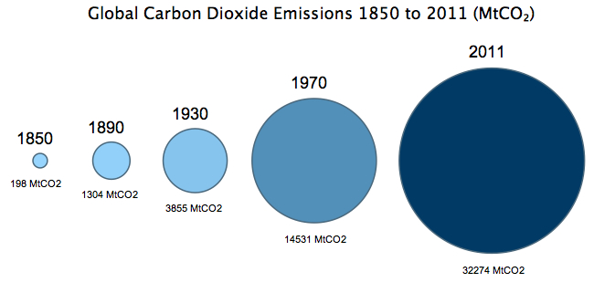

中国碳足迹
随着工业的不断发展，越来越多的煤、油气被开采燃烧，这加剧了人类对家园的影响。
了解更多数据来源：Global Carbon Project; Carbon Dioxide Information Analysis Center(CDIAC)
全球二氧化碳排放在工业革命之前排放量非常低。 直到20世纪中叶，排放量的增长仍然相对缓慢。 根据牛津大学的汇总统计，1950年全球二氧化碳排放量仅超过50亿吨， 与美国目前的排放总量相当。到1990年，这一数字翻了两番，达到220亿吨。
全球碳排放量变化图
